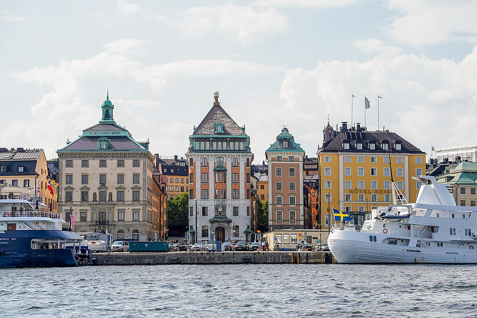
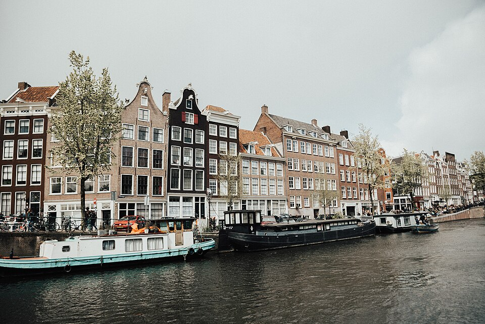
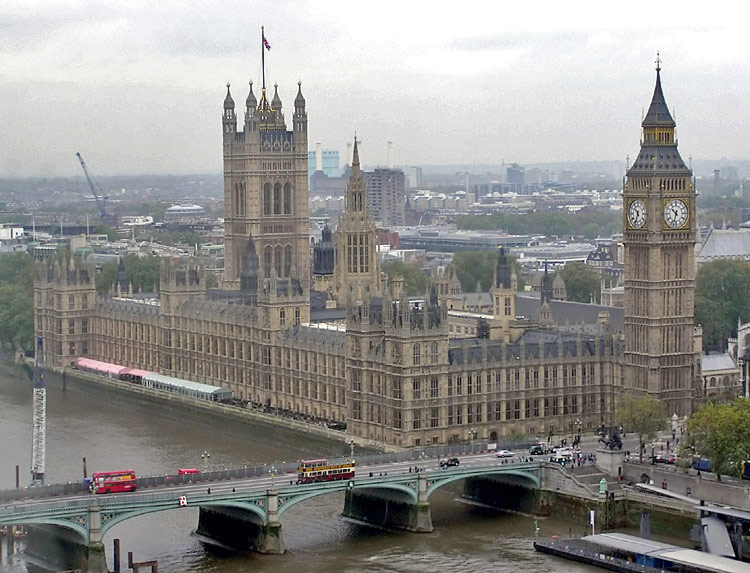
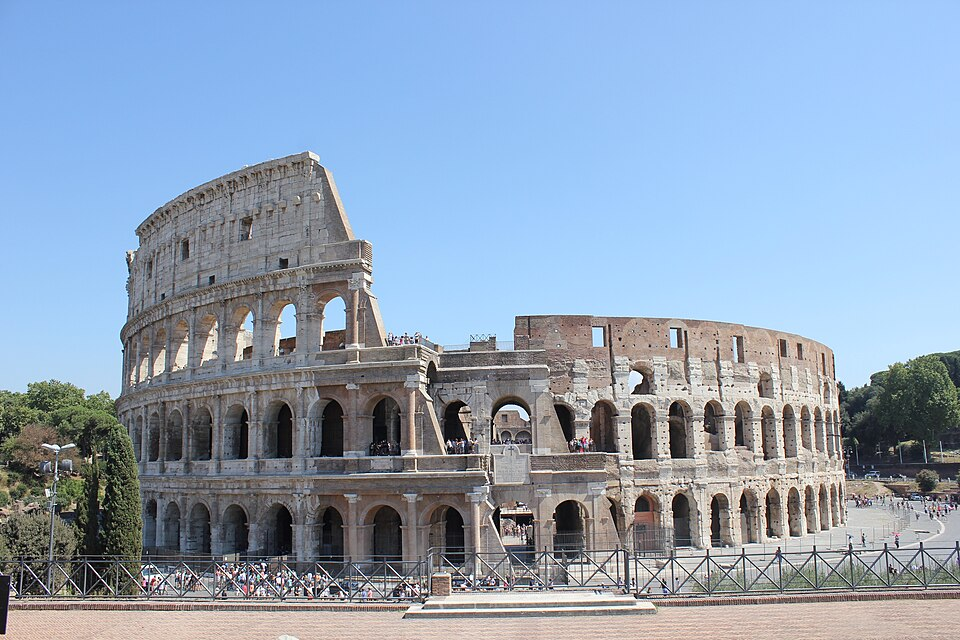
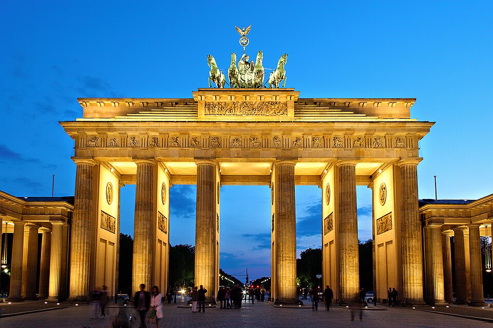

Question photo credits
These photos are used in the Capitals quiz. This page reveals the locations.
Files are Wikimedia Commons previews, downloaded on 28 October 2026. The photos have not been retouched; the quiz may crop them visually to fit the picture area. Each photo retains the licence below.
-
Stockholm · Gamla stan waterfront

Photo by OleNeitzel · CC BY 4.0.
Original photo and licence -
Amsterdam · Canal houses

Photo by Kaci Baum · CC0 1.0. Originally published on Unsplash in May 2017 under CC0.
Original photo and licence -
London · Palace of Westminster

Photo by Arpingstone · Public domain, as dedicated by the photographer.
Original photo and public-domain statement -
Rome · Colosseum

Photo by maiterozas · CC0 1.0.
Original photo and licence -
Berlin · Brandenburg Gate

Photo by Thomas Wolf, www.foto-tw.de / Wikimedia Commons / CC BY-SA 3.0.

.jpg){kind=link}


Fonts and icons
Poppins is provided locally under the SIL Open Font License. Navigation icons reuse the team's existing assets; their original source still needs to be recorded by the team. The close and star icons use simple inline SVG paths.